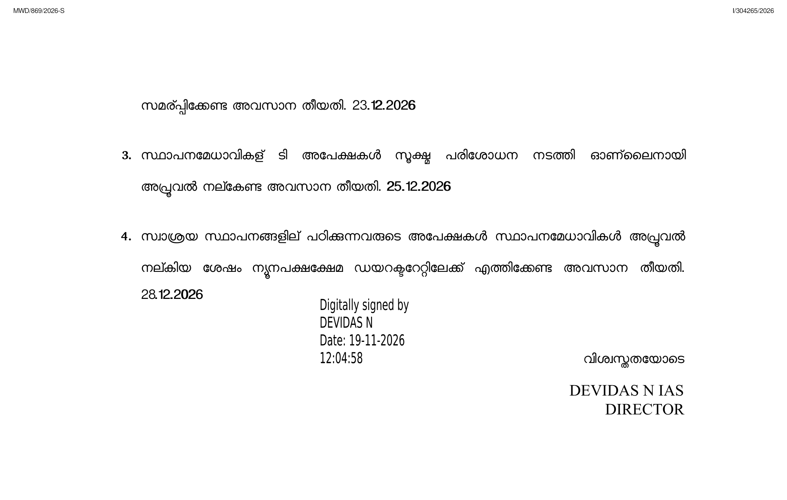
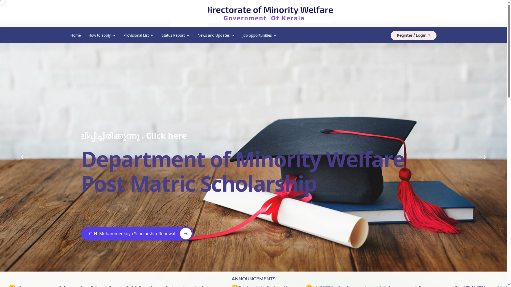
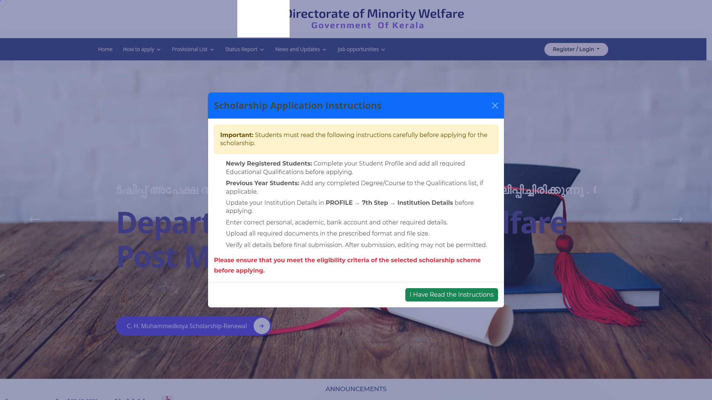
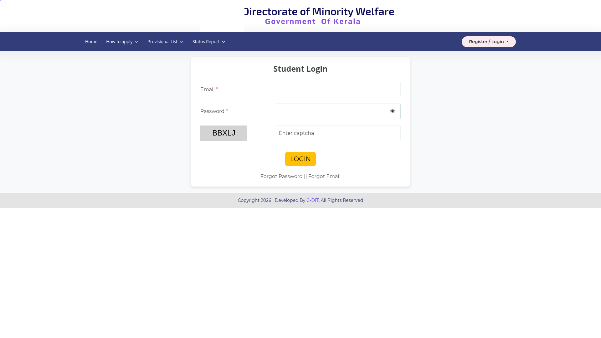
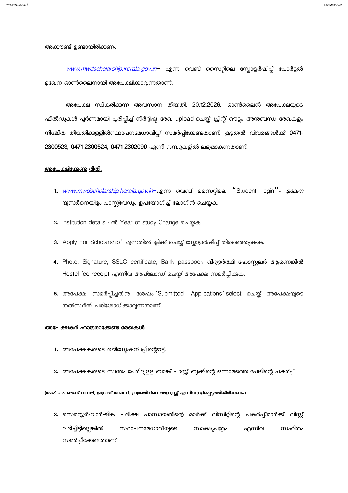

C. H. Muhammedkoya Scholarship Renewal 2026-27: previous recipients can apply
Previously received a fresh award under Kerala's C. H. Muhammedkoya Scholarship? The Department of Minority Welfare has invited renewal applications for 2026-27. The online deadline is 20 December 2026. The printed application and supporting documents must reach your institution by 23 December 2026. This is not a fresh scholarship call for new applicants.
Who is this renewal for?
- Girl students who received the scheme's fresh scholarship in previous years.
- The notice describes Kerala minority students studying degree, postgraduate or professional courses in government/government-aided institutions.
- The communities listed are Muslim, Christian (all sections), Sikh, Buddhist, Jain and Parsi.
- A bank account in the applicant's own name at a scheduled commercial bank is required.
Self-financing students: the opening eligibility paragraph names government/aided institutions, but later sections give forwarding instructions and a deadline for self-financing institutions. The notice does not clearly reconcile those statements. Ask the department and your institution whether your earlier award can be renewed. Do not infer eligibility from the later forwarding instruction alone.
Annual support in the notice
- Degree: Rs5,000.
- Postgraduate: Rs6,000.
- Professional course: Rs7,000.
- Hostel stipend category: Rs13,000.
These are the listed annual categories, not a promise that every applicant receives payment. Do not add the hostel figure to a course scholarship amount unless the department confirms that combination for you. Hostel applicants need the institution head's certificate. The notice describes government/government-recognised/university-approved hostels and private hostels approved by the institution head.
Four different deadlines
- 20 December 2026: students' online applications.
- 23 December 2026: registration printout and supporting documents to the institution head.
- 25 December 2026: institutions complete online verification and approval.
- 28 December 2026: forwarding of approved self-financing-institution applications to the Directorate, where applicable and eligibility has been confirmed.
No closing time is stated. These are separate stages. Completing the online form alone does not complete the institution's verification.

Official notice page 4: hardcopy, institutional approval and forwarding deadlines. Direct PDF render; lower blank space cropped, final image 2120 × 1350. Not a browser screenshot. Checked 24 November 2026. Tap to enlarge.
How to renew, step by step
- Open the official scholarship portal and follow the C. H. Muhammedkoya Scholarship-Renewal link. Read the 19 November 2026 notice before proceeding.

Step 1: current homepage with the scheme-specific renewal notice link. State emblem masked; remaining page unchanged. Desktop capture 1920 × 1080. Checked 24 November 2026. Tap to enlarge.
- Read the portal's general instructions. They ask previous students to update completed qualifications where applicable and update PROFILE → 7th Step → Institution Details before applying. The notice additionally says to change Year of study in Institution Details.

Step 2: public application-instructions dialog. State emblem masked; remaining page unchanged. Desktop capture 1920 × 1080. Checked 24 November 2026. Tap to enlarge.
- Use Register / Login → Student Login. The current public screen asks for email, password and captcha. The notice uses the general term username. Use your existing account; this renewal notice is not an instruction for a new applicant to create an account.

Step 3: blank Student Login screen. State emblem masked; remaining page unchanged. Desktop capture 1920 × 1080. Checked 24 November 2026. Tap to enlarge.
- According to the notice, update Institution Details and Year of study, then choose Apply For Scholarship and select the correct renewal scheme. These in-account steps are the department's published instructions, not screens we accessed.
- The notice lists uploads of photo, signature, SSLC certificate, bank passbook and, for hostel students, hostel fee receipt. Follow current form requirements, review the information and submit only when correct.
- Use Submitted Applications to check status, as the notice instructs. Save the registration printout and deliver it with the required documents to the institution head by 23 December. Confirm that your institution completes its verification and approval.

Official notice page 2: online renewal steps and documents. Direct PDF render at 2120 × 3000, not a browser screenshot. Checked 24 November 2026. Tap to enlarge.
Documents to give your institution
- Registration/application printout.
- Copy of the first page of your own bank passbook with name, account number and branch details.
- Copy of the semester/annual pass mark list, or the institution head's certificate if the result/mark list is not available.
- For hostel applicants, the institution head's certificate confirming hostel residence.
The online upload list and the institution-submission list are separate parts of the notice. Prepare both. The notice does not provide universal upload size limits in the text checked here. Your institution must verify bank details carefully and approve the application online; incorrect account details may lead to rejection.
Unclear points and safe application
The general Guidelines table did not list a separate C. H. renewal row in our check, but the live homepage links the scheme-specific 19 November notice. Use the notice for this renewal, not an unrelated scholarship's rules. This article does not invent income or marks thresholds that are absent from that notice. Earlier-award eligibility and the current form may still impose conditions.
The public notice does not state an application fee. No payment or final submission screen was checked. Use the official portal, keep your password private and never send identity documents or bank details to AiCoN. Do not create a second student account merely because you cannot log in; use the portal's recovery options or ask the department.
Enquiries listed in the notice: 0471-2300523, 0471-2300524, 0471-2302090.
English and Malayalam video guides
No reliable current-cycle English or Malayalam YouTube renewal walkthrough was verified in this check. Use the department's written instructions above rather than a fresh-application video or a video from another year.
മലയാളത്തിൽ പ്രധാന വിവരങ്ങൾ
സി. എച്ച്. മുഹമ്മദ് കോയ സ്കോളർഷിപ്പ് മുൻ വർഷങ്ങളിൽ ഫ്രഷ് ആയി ലഭിച്ച വിദ്യാർത്ഥിനികൾക്കുള്ള 2026-27 റിന്യൂവൽ അപേക്ഷയാണ്. പുതുതായി അപേക്ഷിക്കുന്നവർക്കുള്ള അറിയിപ്പല്ല. ഓൺലൈൻ അപേക്ഷയുടെ അവസാന തീയതി 2026 ഡിസംബർ 20. പ്രിന്റൗട്ടും അനുബന്ധ രേഖകളും സ്ഥാപനമേധാവിക്ക് ഡിസംബർ 23-നകം നൽകണം.
നിലവിലുള്ള അക്കൗണ്ടിൽ Student Login ചെയ്യുക. Institution Details-ൽ Year of study പുതുക്കുക. Apply For Scholarship വഴി ശരിയായ റിന്യൂവൽ തിരഞ്ഞെടുക്കുക. രേഖകൾ അപ്ലോഡ് ചെയ്ത് വിവരങ്ങൾ പരിശോധിക്കുക. സമർപ്പിച്ച ശേഷം Submitted Applications വഴി സ്ഥിതി പരിശോധിക്കുക. സ്ഥാപനത്തിന്റെ പരിശോധനയും അംഗീകാരവും ആവശ്യമാണ്. ഞങ്ങൾ ലോഗിൻ ചെയ്യുകയോ അപേക്ഷ സമർപ്പിക്കുകയോ ചെയ്തിട്ടില്ല.
അറിയിപ്പിന്റെ തുടക്കത്തിൽ സർക്കാർ/എയ്ഡഡ് സ്ഥാപനങ്ങളാണ് പറയുന്നത്. പിന്നീട് സ്വാശ്രയ സ്ഥാപനങ്ങൾക്ക് രേഖകൾ അയയ്ക്കാനുള്ള നിർദ്ദേശവുമുണ്ട്. സ്വാശ്രയ സ്ഥാപനങ്ങളിലെ മുൻ ഗുണഭോക്താക്കൾ സ്വന്തം അർഹത വകുപ്പിനോടും കോളേജിനോടും ഉറപ്പാക്കണം.
Official sources and image notes
- Department scholarship homepage: current renewal link and general instructions dialog.
- Notification MWD/869/2026-S, 19 November 2026: renewal scope, annual categories, steps, documents and four deadlines. All four PDF pages visually inspected.
- Official Student Login: public email/password/captcha screen only.
- General Guidelines table: scheme-specific renewal row absent at the time checked.
Browser captures are full-HD desktop images. A white mask hides the state emblem in each capture, with no other page changes. PDF-page images are direct renders of the official document, not screenshots of an event poster. Cover and poster are text-only AiCoN designs because the official logo includes an emblem.